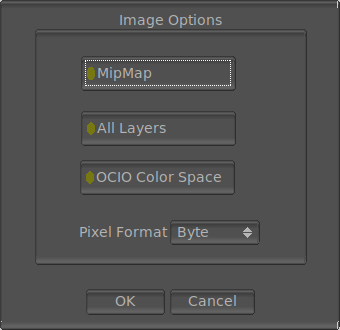

The File Save OpenImageIO Options

The File Save OIIO options allows you to select options of how mrViewer saves the formats supported by OpenImageIO. Currently, these formats are tx, PNG, IFF, and HDR. The window appears whenever you try to save a format supported by OIIO (determined by its extension).
Some formats of OpenImageIO support multiple layers and selecting saving all layers will allow you to save all layers of the image loaded. Currently, the all layers function remains unimplemented.
The OCIO Color Space option allows you to bake in the OCIO color space in the image getting saved. If the pixel depth selected below is smaller than the image's depth, the baking will be done automatically.
Here you can also select the pixel depth, which can be char, short, float or double. While not all formats support all depths, char and short are pretty common.